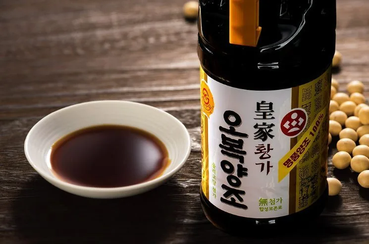
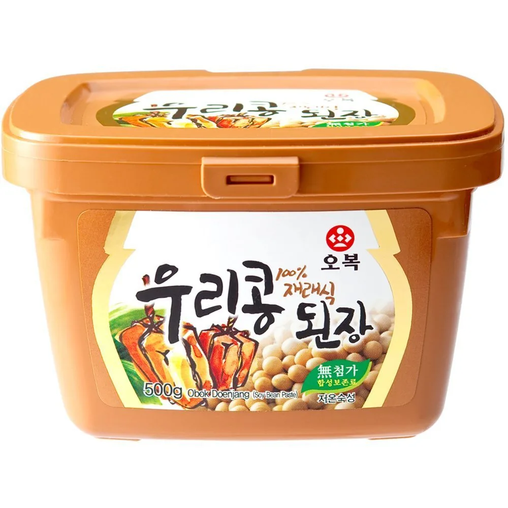
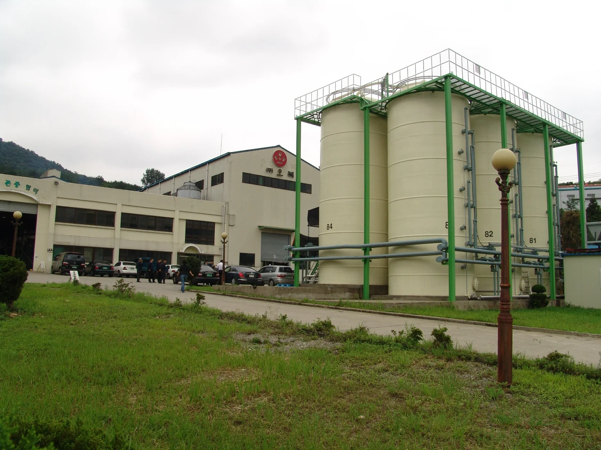
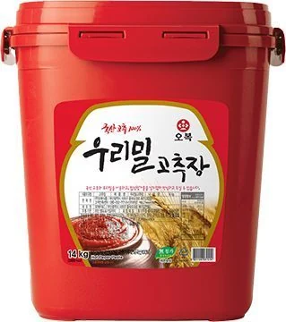
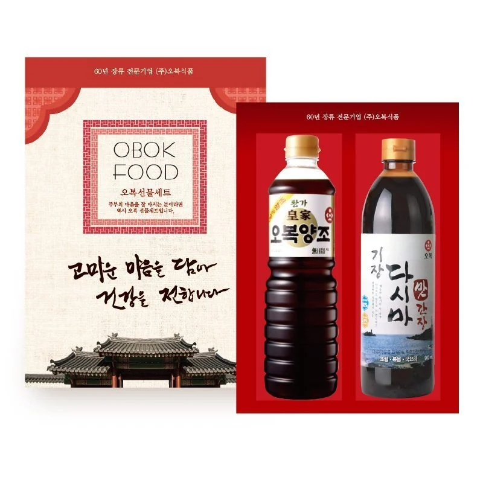
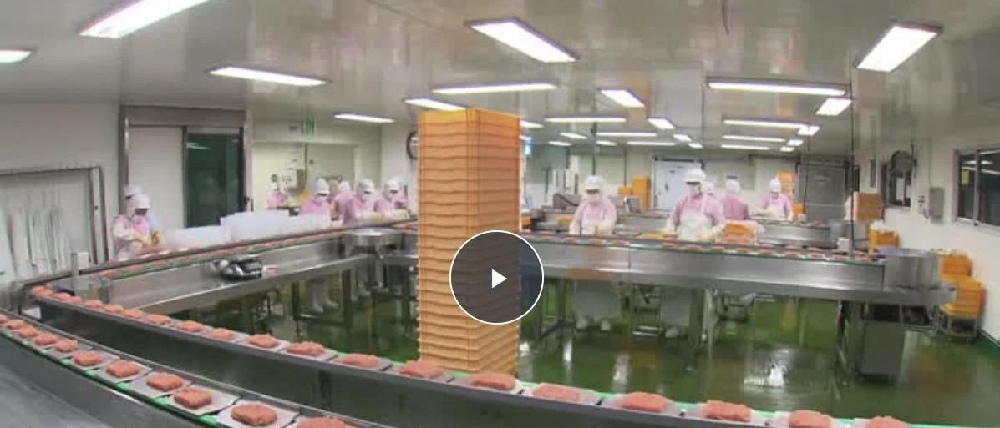

01
Ферментированный соевый соус
Глубокий аромат и сбалансированный вкус для HoReCa, розницы и OEM.
KOREAN BREWED SOY SAUCEKOREAN FERMENTED FOOD MANUFACTURER
Более 70 лет мастерства ферментации — качество, объединяющее мир
С 1952 года OBOK предлагает надежные корейские соусы, объединяя опыт ферментации, стабильное качество и современные производственные возможности.
ABOUT OBOK
Более семи десятилетий OBOK сочетает традиционные методы ферментации с современными пищевыми технологиями. Мы производим соевый соус, кочуджан, твенджан и широкий ассортимент соусов для зарубежных партнеров.
PRODUCT CENTER
От традиционных корейских паст и соусов до рецептур для конкретного рынка — OBOK предлагает гибкие решения по разработке и производству.

Глубокий аромат и сбалансированный вкус для HoReCa, розницы и OEM.
KOREAN BREWED SOY SAUCE
Сбалансированное сочетание сладости, остроты и умами для риса, барбекю и соусов.
GOCHUJANG
Насыщенный вкус ферментированной сои для супов, тушеных блюд и приправ.
DOENJANG
Для корейской лапши с черной бобовой пастой и разнообразных блюд HoReCa.
CHUNJANG
Сладко-соленый и умеренно острый соус для мяса, салатных листьев и дипов.
SSAMJANG
MANUFACTURING STRENGTH
Специализированные емкости, стандартизированные процессы и опытная команда обеспечивают стабильное качество и надежные сроки поставки.
FOOD SERVICE & BULK
Поставляем профессиональные и крупные форматы для общественного питания, промышленного использования и зарубежной дистрибуции. Возможна адаптация упаковки и маркировки.

BULK SUPPLY
Поставляем профессиональные и крупные форматы для общественного питания, промышленного использования и зарубежной дистрибуции. Возможна адаптация упаковки и маркировки.

Кочуджан 14 кг, ведро Твенджан 14 кг, ведро
Твенджан 14 кг, ведро Традиционный твенджан 14 кгOEM / PRIVATE LABEL
Традиционный твенджан 14 кгOEM / PRIVATE LABELPREMIUM GIFT COLLECTION
Подарочные наборы соевых соусов для праздников, корпоративных подарков и зарубежной розницы. Состав и упаковка могут быть адаптированы.


OEM & PRIVATE LABEL
Мы поддерживаем планирование продукта, разработку образцов, расчет стоимости, производство и экспорт с учетом рынка, вкуса и упаковки.
Продукт, рынок, формат и целевая цена.
Корректировка вкуса и рецептуры.
MOQ, упаковка, сроки и условия.
Выпуск и контроль качества.
Документы, отгрузка и сопровождение.
QUALITY & FACTORY
Системный санитарный контроль и управление ключевыми процессами поддерживают стабильное качество от приемки сырья до отгрузки готовой продукции.

CLEAN PRODUCTIONCONTACT US
Направьте нам тип продукта, желаемый формат, объем и целевой рынок.